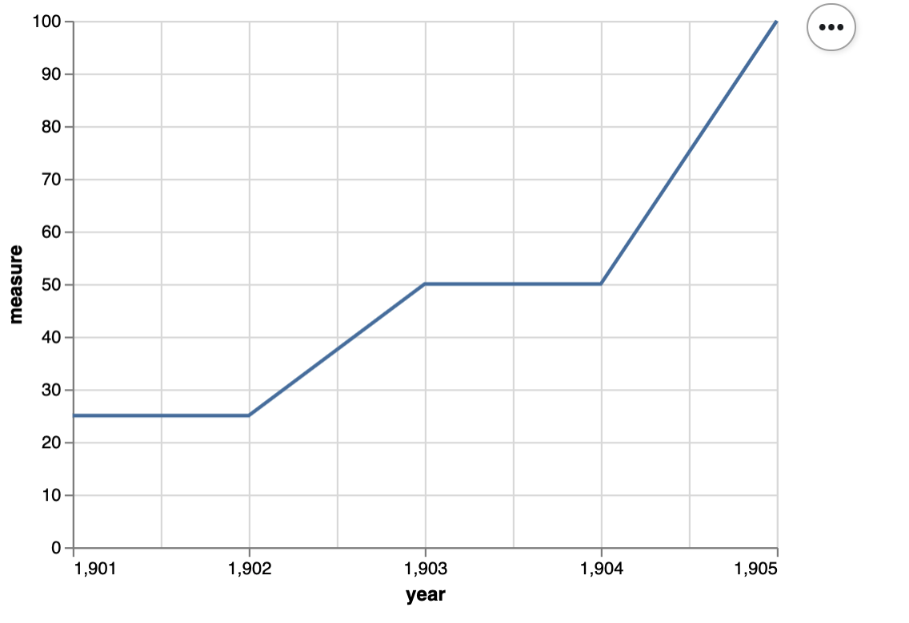

library(testthat)
library(ggplot2)
options(repr.plot.width = 4, repr.plot.height = 4)21 Testing: Images
21.1 Observability of unit outputs in data science
Observability is defined as the extent to which the response of the code under test (here our functions) to a test can be verified.
Questions we should ask when trying to understand how observable our tests are: - What do we have to do to identify pass/fail? - How expensive is it to do this? - Can we extract the result from the code under test? - Do we know enough to identify pass/fail?
Source: CPSC 410 class notes from Reid Holmes, UBC
These questions are easier to answer and address for code that creates simpler data science objects such as data frames, as in the example above. However, when our code under test does something more complex, such as create a plot object, these questions are harder to answer, or can be answered less fully…
Let’s talk about how we might test code to create plots!
21.2 Visual regression testing
When we use certain data visualization libraries, we might think that we can test all code that generates data visualizations similar to code that generates more traditional data objects, such as data frames.
For example, when we create a scatter plot object with ggplot2, we can easily observe many of it’s values and attributes. We show an example below:
cars_ggplot_scatter <- ggplot2::ggplot(mtcars, ggplot2::aes(hp, mpg)) +
ggplot2::geom_point()
cars_ggplot_scatter
cars_ggplot_scatter$layers[[1]]$geom<ggproto object: Class GeomPoint, Geom, gg>
aesthetics: function
default_aes: uneval
draw_group: function
draw_key: function
draw_layer: function
draw_panel: function
extra_params: na.rm
handle_na: function
non_missing_aes: size shape colour
optional_aes:
parameters: function
rename_size: FALSE
required_aes: x y
setup_data: function
setup_params: function
use_defaults: function
super: <ggproto object: Class Geom, gg>cars_ggplot_scatter$mapping$x<quosure>
expr: ^hp
env: globalAnd so we could write some tests for a function that created a ggplot2 object like so:
#' scatter2d
#'
#' A short-cut function for creating 2 dimensional scatterplots via ggplot2.
#'
#' @param data data.frame or tibble
#' @param x unquoted column name to plot on the x-axis from data data.frame or tibble
#' @param y unquoted column name to plot on the y-axis from data data.frame or tibble
#'
#' @return
#' @export
#'
#' @examples
#' scatter2d(mtcars, hp, mpg)
scatter2d <- function(data, x, y) {
ggplot2::ggplot(data, ggplot2::aes(x = {{x}}, y = {{y}})) +
ggplot2::geom_point()
}
helper_data <- dplyr::tibble(x_vals = c(2, 4, 6),
y_vals = c(2, 4, 6))
helper_plot2d <- scatter2d(helper_data, x_vals, y_vals)
test_that('Plot should use geom_point and map x to x-axis, and y to y-axis.', {
expect_true("GeomPoint" %in% c(class(helper_plot2d$layers[[1]]$geom)))
expect_true("x_vals" == rlang::get_expr(helper_plot2d$mapping$x))
expect_true("y_vals" == rlang::get_expr(helper_plot2d$mapping$y))
})Test passed ü•áHowever, when we create a similar plot object using base R, we do not get an object back at all‚Ķ
cars_scatter <- plot(mtcars$hp, mtcars$mpg)
typeof(cars_scatter)[1] "NULL"class(cars_scatter)[1] "NULL"So as you can see, testing plot objects can be more challenging. In the cases of several commonly used plotting functions and package in R and Python, the objects created are not rich objects with attributes that can be easily accessed (or accessed at all). Plotting packages likeggplot2 (R) and altair (Python) which do create rich objects with observable values and attributes appear to be exceptions, rather than the rule. Thus, regression testing against an image generated by the plotting function is often the “best we can do”, or because of this history, what is commonly done.
Regression Testing
Regression testing is defined as tests that check that recent changes to the code base do not break already implemented features.
Thus, once a desired plot is generated from the plotting function, visual regression tests can be used to ensure that further code refactoring does not change the plot function. Tools for this exist for R in the vdiffr package. Matplotlib uses visual regression testing as well, you can see the docs for examples of this here.
Visual regression testing with vdiffr
Say you have a function that creates a nicely formatted scatter plot using ggplot2, such as the one shown below:
pretty_scatter <- function(.data, x_axis_col, y_axis_col) {
ggplot2::ggplot(data = .data,
ggplot2::aes(x = {{ x_axis_col }}, y = {{ y_axis_col }})) +
ggplot2::geom_point(alpha = 0.8, colour = "steelblue", size = 3) +
ggplot2::theme_bw() +
ggplot2::theme(text = ggplot2::element_text(size = 14))
}
library(palmerpenguins)
library(ggplot2)
penguins_scatter <- pretty_scatter(penguins, bill_length_mm, bill_depth_mm) +
labs(x = "Bill length (mm)", y = "Bill depth (mm)")
penguins_scatterWarning: Removed 2 rows containing missing values or values outside the scale range
(`geom_point()`).What is so pretty about this scatter plot? Compared to the default settings of a scatter plot created in
ggplot2this scatter plot has a white instead of grey background, has blue points instead of black, has larger points, and they points have a bit of transparency so you can see some overlapping data points.
Now, say that you want to write tests to make sure that as you further develop and refactor your data visualization code, you do not break it or change the plot (because you have decided you are happy with what it looks like). You can use the vdiffr visual regression testing package to do this. First, you need to abstract the function to an R script that lives in R. For this case, we would create a file called R/pretty_scatter.R that houses the pretty_scatter function shown above.
Then you need to setup a tests directory and test file in which to house your tests that works with the testthat framework (we recommend using usethis::use_testthat() and usethis::use_test("FUNCTION_NAME") to do this).
Finally, add an expectation with vdiffr::expect_doppelganger to your test_that statement:
library(palmerpenguins)
library(ggplot2)
library(vdiffr)
source("../../R/pretty_scatter.R")
penguins_scatter <- pretty_scatter(penguins, bill_length_mm, bill_depth_mm) +
labs(x = "Bill length (mm)", y = "Bill depth (mm)")
penguins_scatter
test_that("refactoring our code should not change our plot", {
expect_doppelganger("pretty scatter", penguins_scatter)
})Then when you run testthat::test_dir("tests/testthat") to run your test suite for the first time, it will take a snapshot of the figure created in your test for that visualization and save it to tests/testthat/_snaps/EXPECT_DOPPELGANGER_TITLE.svg. Then as you refactor your code, you and run testthat::test_dir("tests/testthat") it will compare a new snapshot of the figure with the existing one. If they differ, the tests will fail. You can then run testthat::snapshot_review() to get an interactive viewer which will let you compare the two data visualizations and allow you to either choose to accept the new snapshot (if you wish to include the changes to the data visualization as part of your code revision and refactoring) or you can stop the app and revert/fix some of your code changes so that the data visualization is not unintentionally changed.
Below we show an example of running testthat::snapshot_review() after we made our tests fail by removing alpha = 0.8 from our pretty_scatter function source:

vdiffr demo
In this GitHub repository, we have created a vdiffr demo based on the case above: https://github.com/ttimbers/vdiffr-demo
To get experience and practice using this, we recommend forking this, and then cloning it so that you can try using this, and building off it locally.
Exercise 1
Inside RStudio, run
testthat::test_dir("tests/testthat")to ensure you can get the tests to pass as they exist in the demo.Change something about the code in
R/pretty_scatter.Rthat will change what the plot looks like (text size, point colour, type of geom used, etc).Run
testthat::test_dir("tests/testthat")and see if the tests fail. If they do, runtestthat::snapshot_review()to explore the differences in the two image snapshots. You may be prompted to install a couple R packages to get this working.Add another plot function to the project and create a test for it using
testthatandvdiffr.
21.2.1 Example tests for altair plots (using object attributes not visual regression testing)
Here’s a function that creates a scatter plot:
def scatter(df, x_axis, y_axis):
chart = alt.Chart(df).mark_line().encode(
alt.X(x_axis + ':Q',
scale=alt.Scale(zero=False),
axis=alt.Axis(tickMinStep=1)
),
y=y_axis
)
return chartHere’s some small data to test it on:
small_data = pd.DataFrame({
'year': np.array([1901, 1902, 1903, 1904, 1905]),
'measure' : np.array([25, 25, 50, 50, 100])
})
small_dataHere’s the plot:
small_scatter = scatter(small_data, 'year', 'measure')
small_scatter
Here’s a unit test for the scatter function:
def test_scatter():
assert small_scatter.encoding.x.field == 'year', 'x_axis should be mapped to the x axis'
assert small_scatter.encoding.y.field == 'measure', 'y_axis should be mapped to the y axis'
assert small_scatter.mark == 'line', 'mark should be a line'
assert small_scatter.encoding.x.scale.zero == False, "x-axis should not start at 0"
assert small_scatter.encoding.x.axis.tickMinStep == 1, "x-axis small tick step should be 1"